Table of Contents
31. International Trade
31.1. Introduction to International Trade
31.1.1. Reasons for Trade
31.1.2. Understanding Production Possibilities
31.1.3. Defining Absolute Advantage
31.1.4. Defining Comparative Advantage
31.1.5. Absolute Advantage Versus Comparative Advantage
31.1.6. Benefits of Specialization
31.1.7. Relationship Between Specialization and Trade
31.2. Gains from Trade
31.2.1. Exports: The Economic Impacts of Selling Goods to Other Countries
31.2.2. Imports: The Economics Impacts of Buying Goods from Other Countries
31.2.3. Costs of Trade
31.3. The United States in the Global Economy
31.3.1. The Importance of Trade
31.3.2. The Balance of Trade
31.4. Barriers to Trade
31.4.1. Tariffs
31.4.2. Quotas
31.4.3. Other Barriers
31.5. Arguments for and Against Protectionist Policy
31.5.1. National Security Argument
31.5.2. Infant Industry Argument
31.5.3. Unfair Competition Argument
31.5.4. Jobs Argument
31.5.5. A Summary of International Trade Agreements
31. International Trade
31.1. Introduction to International Trade
31.1.1. Reasons for Trade
Countries benefit when they specialize in producing goods for which they have a comparative advantage and engage in trade for other goods.
Learning Objective
Discuss the reasons that international trade may take place
Key Points
- International trade is the exchange of capital, goods, and services across international borders or territories.
- Each nation should produce goods for which its domestic opportunity costs are lower than the domestic opportunity costs of other nations and exchange those goods for products that have higher domestic opportunity costs compared to other nations.
- Benefits of trade include lower prices and better products for consumers, improved political ties among nations, and efficiency gains for domestic producers.
Key Term
- comparative advantage
- The ability of a party to produce a particular good or service at a lower marginal and opportunity cost over another.
International trade is the exchange of capital, goods, and services across international borders or territories. Trading-partners reap mutual gains when each nation specializes in goods for which it holds a comparative advantage and then engages in trade for other products. In other words, each nation should produce goods for which its domestic opportunity costs are lower than the domestic opportunity costs of other nations and exchange those goods for products that have higher domestic opportunity costs compared to other nations .
Countries benefit from producing goods in which they have comparative advantage and trading them for goods in which other countries have the comparative advantage.
In addition to comparative advantage, other reasons for trade include:
- Differences in factor endowments: Countries have different amounts of land, labor, and capital. Saudi Arabia may have a lot of oil, but perhaps not enough lumber. It will thus have to trade for lumber. Japan may be able to produce technological goods of superior quality, but it may lack many natural resources. It may trade with Indonesia for inputs.
- Gains from specialization: Countries may gain economies of scale from specialization, experiencing long run average cost declines as output increases.
- Political benefits: Countries can leverage trade to forge closer cultural and political bonds. International connections also help promote diplomatic (rather than military) solutions to international problems.
- Efficiency gains: Domestic firms will be forced to become more efficient in order to be competitive in the global market.
- Benefits of increased competition: A greater degree of competition leads to lower prices for consumers, greater responsiveness to consumer wants and needs, and a wider variety of products.
To summarize, international trade benefits mostly all incumbents and generates substantial value for the global economy.
31.1.2. Understanding Production Possibilities
The production possibility frontier shows the combinations of output that could be produced using available inputs.
Learning Objective
Explain the benefits of trade and exchange using the production possibilities frontier (PPF)
Key Points
- The production possibilities curve shows the maximum possible production level of one commodity for any production level of another, given the existing levels of the factors of production and the state of technology.
- Points outside the production possibilities curve are unattainable with existing resources and technology if trade does not occur with an external producer.
- Without trade, each country consumes only what it produces. However, because of specialization and trade, the absolute quantity of goods available for consumption is higher than the quantity that would be available under national economic self-sufficiency.
Key Terms
- Autarky
- National economic self-sufficiency.
- Production possibilities frontier
- A graph that shows the combinations of two commodities that could be produced using the same total amount of each of the factors of production.
In economics, the production possibility frontier (PPF) is a graph that shows the combinations of two commodities that could be produced using the same total amount of the factors of production. It shows the maximum possible production level of one commodity for any production level of another, given the existing levels of the factors of production and the state of technology.
PPFs are normally drawn as extending outward around the origin, but can also be represented as a straight line . An economy that is operating on the PPF is productively efficient, meaning that it would be impossible to produce more of one good without decreasing the production of the other good. For example, if an economy that produces only guns and butter is operating on the PPF, the production of guns would need to be sacrificed in order to produce more butter . If production is efficient, the economy can choose between combinations (i.e., points) on the PPF: B if guns are of interest, C if more butter is needed, or D if an equal mix of butter and guns is required.
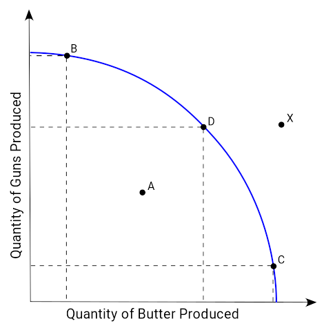{kind=link}
If production is efficient, the economy can choose between combinations on the PPF. Point X, however, is unattaible with existing resources and technology if trade does not occur.
If the economy is operating below the curve, it is operating inefficiently, because resources could be reallocated in order to produce more of one or both goods without decreasing the quantity of either. Points outside the curve are unattainable with existing resources and technology if trade does not occur with an outside producer.
The PPF will shift outwards if more inputs (such as capital or labor) become available or if technological progress makes it possible to produce more output with the same level of inputs. An outward shift means that more of one or both outputs can be produced without sacrificing the output of either good. Conversely, the PPF will shift inward if the labor force shrinks, the supply of raw materials is depleted, or a natural disaster decreases the stock of physical capital.
Without trade, each country consumes only what it produces. In this instance, the production possibilities frontier is also the consumption possibilities frontier. Trade enables consumption outside the production possibility frontier. The world PPF is made up by combining countries' PPFs. When countries' autarkic productions are added (when there is no trade), the total quantity of each good produced and consumed is less than the world's PPF under free trade (when nations specialize according to their comparative advantage). This shows that in a free trade system, the absolute quantity of goods available for consumption is higher than the quantity available under autarky.
31.1.3. Defining Absolute Advantage
A country has an absolute advantage in the production of a good when it can produce it more efficiently than other countries.
Learning Objective
Relate absolute advantage, productivity, and marginal cost
Key Points
- A country that has an absolute advantage can produce a good at lower marginal cost.
- A country with an absolute advantage can sell the good for less than the country that does not have the absolute advantage.
- Absolute advantage differs from comparative advantage, which refers to the ability to produce specific goods at a lower opportunity cost.
Key Term
- Absolute advantage
- The capability to produce more of a given product using less of a given resource than a competing entity.
Absolute advantage refers to the ability of a country to produce a good more efficiently than other countries. In other words, a country that has an absolute advantage can produce a good with lower marginal cost (fewer materials, cheaper materials, in less time, with fewer workers, with cheaper workers, etc.). Absolute advantage differs from comparative advantage, which refers to the ability of a country to produce specific goods at a lower opportunity cost.
A country with an absolute advantage can sell the good for less than a country that does not have the absolute advantage. For example, the Canadian economy, which is rich in low cost land, has an absolute advantage in agricultural production relative to some other countries. China and other Asian economies export low-cost manufactured goods, which take advantage of their much lower unit labor costs .
Many consumer electronics are manufactured in China. China can produce such goods more efficiently, which gives it an absolute advantage relative to many countries.
Imagine that Economy A can produce 5 widgets per hour with 3 workers. Economy B can produce 10 widgets per hour with 3 workers . Assuming that the workers of both economies are paid equally, Economy B has an absolute advantage over Economy A in producing widgets per hour. This is because Economy B can produce twice as many widgets as Economy B with the same number of workers.
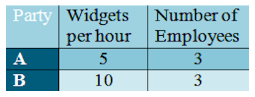{kind=link}
Party B has an absolute advantage in producing widgets. It can produce more widgets with the same amount of resources than Party A.
If there is no trade, then each country will consume what it produces. Adam Smith said that countries should specialize in the goods and services in which they have an absolute advantage. When countries specialize and trade, they can move beyond their production possibilities frontiers, and are thus able to consume more goods as a result.
31.1.4. Defining Comparative Advantage
A country has a comparative advantage over another when it can produce a good or service at a lower opportunity cost.
Learning Objective
Analyze the relationship between opportunity cost and comparative advantage
Key Points
- Even if one country has an absolute advantage in the production of all goods, it can still benefit from trade.
- Countries should import goods if the opportunity cost of importing is lower than the cost of producing them locally.
- Specialization according to comparative advantage results in a more efficient allocation of world resources. A larger quantity of outputs becomes available to the trading nations.
- Competitive advantage is distinct from comparative advantage because it has to do with distinguishing attributes which are not necessarily related to a lower opportunity cost.
Key Terms
- Opportunity cost
- The cost of an opportunity forgone (and the loss of the benefits that could be received from that opportunity); the most valuable forgone alternative.
- competitive advantage
- Something that places a company or a person above the competition
- comparative advantage
- The ability of a party to produce a particular good or service at a lower marginal and opportunity cost over another.
Comparative Advantage
In economics, comparative advantage refers to the ability of a party to produce a particular good or service at a lower marginal and opportunity cost over another. Even if one country is more efficient in the production of all goods (has an absolute advantage in all goods) than another, both countries will still gain by trading with each other. More specifically, countries should import goods if the opportunity cost of importing is lower than the cost of producing them locally.
Specialization according to comparative advantage results in a more efficient allocation of world resources. Larger outputs of both products become available to both nations. The outcome of international specialization and trade is equivalent to a nation having more and/or better resources or discovering improved production techniques.
Determining Comparative Advantage
Imagine that there are two nations, Chiplandia and Entertainia, that currently produce their own computer chips and CD players . Chiplandia uses less time to produce both products, while Entertainia uses more time to produce both products. Chiplandia enjoys and absolute advantage, an ability to produce an item with fewer resources. However, the accompanying table shows that Chiplandia has a comparative advantage in computer chip production, while Entertainia has a comparative advantage in the production of CD players. The nations can benefit from specialization and trade, which would make the allocation of resources more efficient across both countries.
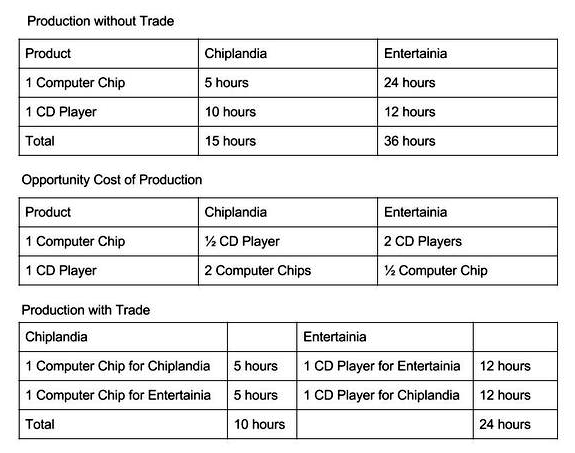{kind=link}
Chiplandia has a comparative advantage in producing computer chips, while Entertainia has a comparative advantage in producing CD players. Both nations can benefit from trade.
For another example, if the opportunity cost of producing one more unit of coffee in Brazil is 2/3 units of wheat, while the opportunity cost of producing one more unit of coffee in the United States is 1/3 wheat, then the U.S. should produce coffee, while Brazil should produce wheat (assuming Brazil has the lower opportunity cost of producing wheat).
Comparative vs Competitive Advantage
It is important to distinguish between comparative advantage and competitive advantage. Though they sound similar, they are different concepts. Unlike comparative advantage, competitive advantage refers to a distinguishing attribute of a company or a product. It may or may not have anything to do with opportunity cost or efficiency. For example, having good brand recognition or relationships with suppliers is a competitive advantage, but not a comparative advantage. In the context of international trade, we more often discuss comparative advantage.
31.1.5. Absolute Advantage Versus Comparative Advantage
Absolute advantage refers to differences in productivity of nations, while comparative advantage refers to differences in opportunity costs.
Learning Objective
Differentiate between absolute advantage and comparative advantage
Key Points
- The producer that requires a smaller quantity inputs to produce a good is said to have an absolute advantage in producing that good.
- Comparative advantage refers to the ability of a party to produce a particular good or service at a lower opportunity cost than another.
- The existence of a comparative advantage allows both parties to benefit from trading, because each party will receive a good at a price that is lower than its opportunity cost of producing that good.
Key Terms
- Absolute advantage
- The capability to produce more of a given product using less of a given resource than a competing entity.
- comparative advantage
- The ability of a party to produce a particular good or service at a lower marginal and opportunity cost over another.
Absolute advantage compares the productivity of different producers or economies. The producer that requires a smaller quantity inputs to produce a good is said to have an absolute advantage in producing that good.
The accompanying figure shows the amount of output Country A and Country B can produce in a given period of time . Country A uses less time than Country B to make either food or clothing. Country A makes 6 units of food while Country B makes one unit, and Country A makes three units of clothing while Country B makes two. In other words, Country A has an absolute advantage in making both food and clothing.
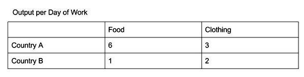{kind=link}
Country A has an absolute advantage in making both food and clothing, but a comparative advantage only in food.
Comparative advantage refers to the ability of a party to produce a particular good or service at a lower opportunity cost than another. Even if one country has an absolute advantage in producing all goods, different countries could still have different comparative advantages. If one country has a comparative advantage over another, both parties can benefit from trading because each party will receive a good at a price that is lower than its own opportunity cost of producing that good. Comparative advantage drives countries to specialize in the production of the goods for which they have the lowest opportunity cost, which leads to increased productivity.
For example, consider again Country A and Country B in . The opportunity cost of producing 1 unit of clothing is 2 units of food in Country A, but only 0.5 units of food in Country B. Since the opportunity cost of producing clothing is lower in Country B than in Country A, Country B has a comparative advantage in clothing.
Thus, even though Country A has an absolute advantage in both food and clothes, it will specialize in food while Country B specializes clothing. The countries will then trade, and each will gain.
Absolute advantage is important, but comparative advantage is what determines what a country will specialize in.
31.1.6. Benefits of Specialization
Specialization leads to greater economic efficiency and consumer benefits.
Learning Objective
Discuss the effects of specialization on production
Key Points
- Whenever countries have different opportunity costs in production they can benefit from specialization and trade.
- Benefits of specialization include greater economic efficiency, consumer benefits, and opportunities for growth for competitive sectors.
- The disadvantages of specialization include threats to uncompetitive sectors, the risk of over-specialization, and strategic vulnerability.
Key Term
- comparative advantage
- The ability of a party to produce a particular good or service at a lower marginal and opportunity cost over another.
Whenever a country has a comparative advantage in production it can benefit from specialization and trade. However, specialization can have both positive and negative effects on a nation's economy. The effects of specialization (and trade) include:
- Greater efficiency: Countries specialize in areas that they are naturally good at and also benefit from increasing returns to scale for the production of these goods. They benefit from economies of scale , which means that the average cost of producing the good falls (to a certain point) because more goods are being produced . Similarly, countries can benefit from increased learning. They simply are more skilled at making the product because they have specialized in it. These effects both contribute to increased overall efficiency for countries. Countries become better at making the product they specialize in.
- Consumer benefits: Specialization means that the opportunity cost of production is lower, which means that globally more goods are produced and prices are lower. Consumers benefit from these lower prices and greater quantity of goods.
- Opportunities for competitive sectors: Firms gain access to the whole world market, which allows them to grow bigger and to benefit further from economies of scale.
- Gains from trade: Suppose that Britain and Portugal each produce wine and cloth. Britain has a comparative advantage in cloth and Portugal in wine . By specializing and then trading, Britain can get a unit of wine for only 100 units of labor by trading cloth for labor instead of taking 110 units of labor to produce the wine itself (assuming the price of Cloth to Wine is 1). Similarly, Portugal can specialize in wine and get a unit of cloth for only 80 units of labor by trading, instead of the 90 units of labor it would take to produce the cloth domestically. Each country will continue to trade until the price equals the opportunity cost, at which point it will decide to just produce the other good domestically instead of trading. Thus (in this example with no trade costs) both countries benefit from specializing and then trading.
Of course, there are also some potential downsides to specialization:
- Threats to uncompetitive sectors: Some parts of the economy may not be able to compete with cheaper or better imports. For example, firms in United States may see demand for their products fall due to cheaper imports from China. This may lead to structural unemployment.
- Risk of over-specialization: Global demand may shift, so that there is no longer demand for the good or service produced by a country . For example, the global demand for rubber has fallen due the the availability of synthetic substitutes. Countries may experience high levels of persistent structural unemployment and low GPD because demand for their products has fallen.
- Strategic vulnerability: Relying on another country for vital resources makes a country dependent on that country. Political or economic changes in the second country may impact the supply of goods or services available to the first.
As a whole, economists generally support specialization and trade between nations.
31.1.7. Relationship Between Specialization and Trade
Comparative advantage is the driving force of specialization and trade.
Learning Objective
Discuss how countries determine which goods to produce and trade
Key Points
- Nations decide whether they should export or import goods based on comparative advantages.
- Generally, nations can consume more by specializing in a good and trading it for other goods.
- When countries decide which country will specialize in which product, the essential question becomes who could produce the product at a lower opportunity cost.
Key Term
- Opportunity cost
- The cost of an opportunity forgone (and the loss of the benefits that could be received from that opportunity); the most valuable forgone alternative.
Specialization refers to the tendency of countries to specialize in certain products which they trade for other goods, rather than producing all consumption goods on their own. Countries produce a surplus of the product in which they specialize and trade it for a different surplus good of another country. The traders decide on whether they should export or import goods depending on comparative advantages.
Imagine that there are two countries and both countries produce only two products. They can both choose to be self-sufficient, because they have the ability to produce both products. However, specializing in the product for which they have a comparative advantage and then trading would allow both countries to consume more than they would on their own.
One might assume that the country that is most efficient at the production of a good would choose to specialize in that good, but this isn't always the case. Rather than absolute advantage, comparative advantage is the driving force of specialization. When countries decide what products to specialize in, the essential question becomes who could produce the product at a lower opportunity cost. Opportunity cost refers to what must be given up in order to obtain some item. It requires calculating what one could have gotten if one produced another product instead of one unit of the given product.
For example, the opportunity cost to Bob of 1 bottle of ketchup is 1/2 bottle of mustard . This means that in the same amount of time that Bob could produce one bottle of ketchup, he could have produced 1/2 bottle of mustard. Tom could have produced 1/3 bottle of mustard during the time that he was making one bottle of ketchup. Tom will have the comparative advantage in producing ketchup because he has to give up less mustard for the same amount of ketchup. In sum, the producer that has a smaller opportunity cost will have the comparative advantage. It follows that Bob will have a comparative advantage in the production of mustard.

Tom has the comparative advantage in producing ketchup, while Bob has the comparative advantage in producing mustard.
There is one case in which countries are not better off trading: when both face the same opportunity costs of production. This doesn't mean that both countries have the same production function - one could still be absolutely more productive than the other - but neither has a comparative advantage over the other. In this case, specialization and trade will result in exactly the same level of consumption as producing all goods domestically.
31.2. Gains from Trade
31.2.1. Exports: The Economic Impacts of Selling Goods to Other Countries
Exporting is a form of international trade which allows for specialization, but can be difficult depending on the transaction.
Learning Objective
Evaluate the effects of international trade on exporting countries
Key Points
- Export is defined as the act of shipping goods and services out of the port of a country.
- Legal restrictions and trade barriers are in place internationally to control trade, whether goods are being exported or imported.
- When legal restrictions and trade barriers are lessened or lifted the producer surplus increases and so does the amount of the goods and services that are exported from the country.
- Exporting allows a country's producers to gain ownership advantages and develop low-cost and differentiated products.
- Due to an extra layer in the chain of distribution which squeezes the margins, exporters may have to offer lower prices to the importers than to domestic wholesalers in order to move their product and generate business.
Key Terms
- export
- Any good or commodity, transported from one country to another country in a legitimate fashion, typically for use in trade.
- trade
- Buying and selling of goods and services on a market.
Exports
Export is defined as the act of a country shipping goods and services out of the port of a country. In international trade, an export refers to the selling of goods and services produced in the home country to other markets (other countries) . The seller of the goods and services is referred to as the "exporter. "
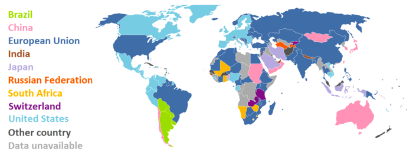{kind=link}
The map shows the primary exporters for countries around the globe. The colors indicate the leading merchandise export destination for the indicated country (the United States main export destination is the European Union). Exporting is the act of shipping goods and services to other countries.
Protecting Exports
In order to protect exports, commercial goods are subject to customs authorities for both the exporting and importing countries. Legal restrictions and trade barriers are in place internationally to control trade, whether goods are being exported or imported. When legal restrictions and trade barriers are lessened or lifted the producer surplus increases and so does the amount of the goods and services that are exported to other countries.
Impact of Exports
Exporting goods and services has both advantages and disadvantages for countries involved in international trade.
Exporting allows a country's producers to gain ownership advantages and develop low-cost and differentiated products. It is viewed as a low-risk mode of production and trade. Exporters also experience internationalization advantages which are the benefits of retaining a core competence within a company and threading it through the value chain instead of obtaining a license to outsource or sell the goods or services.
Disadvantages of exporting are mainly the result of manufacturers having to sell their goods to importers. In domestic sales, manufacturers sell directly to wholesalers or even directly to the retailer or customer. For exports, manufacturers face and extra layer in the chain of distribution which squeezes the margins. As a result, manufacturers may have to offer lower prices to the importers than to domestic wholesalers in order to move their product and generate business.
31.2.2. Imports: The Economics Impacts of Buying Goods from Other Countries
Imports are critical for many economies; they are the defining financial transactions of international trade and account for a large portion of the GDP.
Learning Objective
Evaluate the effects of international trade on an importing country
Key Points
- Imports are defined as purchases of good or services by a domestic economy from a foreign economy.
- Protectionism is the economic policy of restraining trade between countries through tariffs on imported goods, restrictive quotas, and government regulations.
- In most countries, international trade and importing goods represents a significant share of the gross domestic product (GDP).
- International trade is generally more expensive than domestic trade due to additionally imposed costs, taxes, and tariffs.
- On a business level, companies take part in direct-imports; a major retailer imports goods from an overseas manufacturer in order to save money.
Key Terms
- protectionism
- A policy of protecting the domestic producers of a product by imposing tariffs, quotas or other barriers on imports.
- trade
- Buying and selling of goods and services on a market.
- import
- To bring (something) in from a foreign country, especially for sale or trade.
Imports
Imports are defined as purchases of good or services by a domestic economy from a foreign economy. The domestic purchaser of the good or service is called an importer. Imports and exports are critical for many economies and they are the defining financial transactions of international trade.
Protecting Imports
Due to the economic importance of imports, countries enact specific laws, barriers, and policies in order to regulate international trade. Protectionism is the economic policy of restraining trade between countries through tariffs on imported goods, restrictive quotas, and government regulations. When trade barriers and policies of protectionism are eliminated, consumer surplus increases. The price of a good or service will decrease while the quantity consumed will increase.
Impacts of Buying Imported Goods
On a national level, in most countries international trade and importing goods represents a significant share of the gross domestic product (GDP). International trade has a significant economic, social, and political importance in many countries. Imports provide countries with access to goods and services from other nations. Without imports, a country would be limited to the goods and services within its own borders .
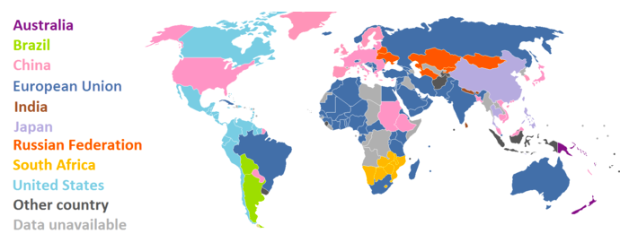{kind=link}
The map shows the largest importers on an international scale. The color indicates the leading source of merchandise imports for the indicated country (the United States' imports the largest percentage of its goods from China). Imports account for a significant share in the gross domestic product (GDP) of a country.
International trade is generally less expensive than domestic trade despite additionally imposed costs, taxes, and tariffs. However, the factors of production are usually more mobile domestically than internationally (capital and labor). It is common for countries to import goods rather than a factor of production. For example, the U.S. imports labor-intensive goods from China. Instead of importing Chinese labor, the U.S. imports goods that were produced in China by Chinese labor.
On a business level, companies take part in direct-imports, which occur when a major retailer imports goods that are designed locally from an overseas manufacturer. The direct-import program allows the retailer to bypass the local supplier and purchase the final product directly from the manufacturer. Direct imports save retailers money by eliminating the local supplier.
31.2.3. Costs of Trade
Free trade is a policy where governments do not discriminate against imports and exports; creates a large net gain for society.
Learning Objective
Identify the groups that benefit and the groups that are harmed by free trade policies
Key Points
- Free trade eliminates export tariffs, import quotas, and export quotas; all of which cause more losses than benefits for a country.
- With free trade in place the producers in exporting countries and the consumers in importing countries all benefit.
- One of the main disadvantages is the selective application of free trade. Economic inefficiency can be created through trade diversion.
- Trade restricts displaces workers, makes overcoming unemployment challenging, increases economic inequality, and can lower wages.
- When free trade is applied to only the high cost producer it can lead to trade diversion and a net economic loss.
- Another disadvantage is that by increasing returns to scale, can cause certain industries to settle in an geographically area where there is not comparative advantage.
Key Terms
- welfare
- Health, safety, happiness and prosperity; well-being in any respect.
- tariff
- A system of government-imposed duties levied on imported or exported goods; a list of such duties, or the duties themselves.
- free trade
- International trade free from government interference, especially trade free from tariffs or duties on imports.
Free Trade
Free trade is a policy where governments do not discriminate against exports and imports. There are few or no restrictions on trade and markets are open to both foreign and domestic supply and demand.
Advantages
Free trade is beneficial to society because it eliminates import and export tariffs. Restricted trade affects the welfare of society because although producers experience increases in surplus and additional revenue, the loss faced by consumers is greater than any benefit obtained . When a country trades freely with the rest of the world, it should theoretically produce a net gain for society and increases social welfare. Free trade policies consist of eliminating export tariffs, import quotas, and export quotas; all of which cause more losses than benefits for a country. With free trade in place, the producers of the exported good in exporting countries and the consumers in importing countries all benefit.
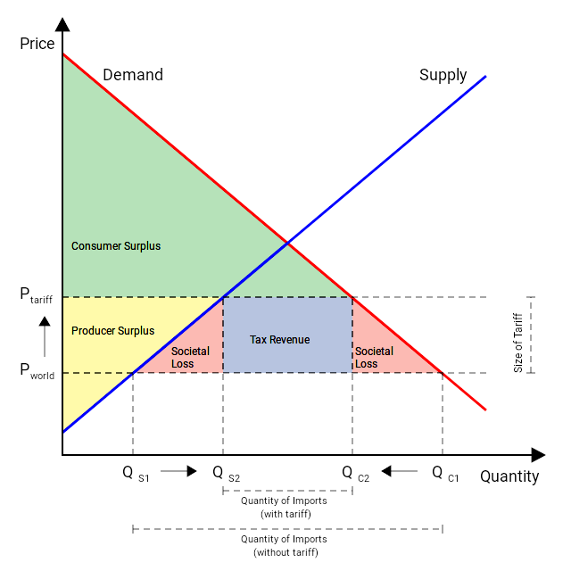{kind=link}
This image shows what happens to societal welfare when free trade is not enacted. Tariffs cause the consumer surplus (green area) to decrease, while the producer surplus (yellow area) and government tax revenue (blue area) increase. The amount of societal loss (pink area) is larger than any benefits experienced by the producers and government. Free trade does not have tariffs and results in net gain for society.
Disadvantages
One of the main disadvantages is the selective application of free trade. Economic inefficiency can be created through trade diversion. It is economically efficient for a good to be produced in the country with the lowest production costs. However, this does not always occur if a high cost producer has a free trade agreement and the low cost producer does not. When free trade is applied to only the high cost producer it can lead to trade diversion to not the most efficient producer, but the one facing the lowest trade barriers, and a net economic loss. Free trade is highly effective and provides society with a net gain, but only if it is applied.
Due to industry specializations, many workers are displaced and do not receive retraining or assistance finding jobs in other sectors. The nature of industries and trade increases economic inequality. As a result of unskilled workers the wages within the various industries may decline.
Another disadvantage is that by increasing returns to scale, can cause certain industries to settle in an geographically area where there is not comparative advantage. Despite this disadvantage, the level of output that is generated by free trade for both the "winner" and the "loser" is increased substantially.
The Results of Free Trade
Economists have studied free trade extensively and although it creates winners and losers, the main consensus is that free trade generates a large net gain for society. In a 2006 survey of American economists, it was found that 85.7% believed that the U.S. should eliminate any remaining tariffs and trade barriers. Economists professor N. Gregory Mankiw explained that, "few propositions command as much consensus among professional economists as that open world trade increases economic growth and raises living standards. "
31.3. The United States in the Global Economy
31.3.1. The Importance of Trade
International trade is an integral part of the modern world economy.
Learning Objective
Discuss the reasons of the U.S. increase in international trade participation after World War II
Key Points
- The international market serves as an important place for the exchange of goods and services.
- Economic theory shows that there are gains from trade for both countries involved.
- Advances in transportation has dramatically reduced the costs of moving goods around the globe.
- Technological advances have made international production and trade easier to coordinate.
- Trade barriers between countries have fallen and are likely to continue to fall.
Key Terms
- production possibilities curve
- The various combinations of amounts of two commodities that could be produced using the same fixed total amount of each of the factors of production
- comparative advantage
- The ability of a party to produce a particular good or service at a lower margin and opportunity cost over another.
Economists generally support trade because it allows for increased overall utility for both countries . Gains from trade are commonly described as resulting from:
Even in ancient times, people benefited from widespread international trade. The benefits from international trade have increased as costs decline and the international system becomes better integrated.
- specialization in production from division of labor (according to one's comparative advantage), economies of scale, scope, and agglomeration and relative availability of factor resources in types of output by farms, businesses, location and economies
- a resulting increase in total output possibilities
- trade through markets from sale of one type of output for other, more highly valued goods.
The Rise of International Trade
International trade is important, and, over time, has become more important. There have been three primary reasons for this increase in importance.
First, there have been large reductions in the cost of transportation and communication. It is now much cheaper to not only operate internationally and trade with foreign partners, but also to exchange information between potential buys and sellers.
Second, technological advances have made international production and trade easier to coordinate. More efficient telecommunications, from the first transatlantic telephone cable in 1956 to the popularization of the internet in the 1980s and 1990s, have allowed companies to exchange goods more efficiently and lowered the costs of international integration. Technological advances, from the invention of the jet engine to the development of just-in-time manufacturing, have also contributed to the rise in international trade.
Third, trade barriers between countries have fallen and are likely to continue to fall. In particular, the Bretton Woods system of international monetary management has shaped the relationship between the world's major industrial states and has resulted in a much more integrated system of international exchange. Established in 1946 to rebuild the international economic system after World War II, the Bretton Woods Conference set up regulations for production of their individual currencies to maintain fixed exchange rates between countries with the aim of more easily facilitating international trade.This was the foundation of the U.S. vision of postwar world free trade, which also involved lowering tariffs and, among other things, maintaining a balance of trade via fixed exchange rates that would be favorable to the capitalist system. Although the world eventually abolished the system of fixed exchange rates, the goal of more open economies and free international trade remained.
31.3.2. The Balance of Trade
The balance of trade is the difference between the monetary value of exports and imports of output in an economy over a certain period.
Learning Objective
Explain the relationship between the trade balance of a nation and its economic well-being
Key Points
- A positive balance is known as a trade surplus if it consists of exporting more than is imported; a negative balance is referred to as a trade deficit or, informally, a trade gap.
- Factors that can affect the balance of trade include the currency exchange rate, cost of inputs, barriers to trade such as tariffs and regulations, and the prices of domestic goods.
- The twin deficits hypothesis contends that there is a strong positive relationship between a national economy's current account balance and its government budget balance.
Key Terms
- net capital outflow
- The net flow of funds being invested abroad by a country during a certain period of time.
- net exports
- The difference between the monetary value of exports and imports.
The balance of trade is the difference between the monetary value of exports and imports of output in an economy over a certain period, measured in the currency of that economy. It is the relationship between a nation's imports and exports. It is measured by finding the country's net exports. A positive balance is known as a trade surplus if it consists of exporting more than is imported; a negative balance is referred to as a trade deficit or, informally, a trade gap.
Factors that can affect the balance of trade include:
- The cost of production (land, labor, capital, taxes, incentives, etc.) in the exporting economy compared to those in the importing economy
- The cost and availability of raw materials, intermediate goods, and other inputs
- Currency exchange rate
- Multilateral, bilateral, and unilateral taxes or restrictions on trade
- Non-tariff barriers such as environmental, health, or safety standards
- The availability of adequate foreign exchange with which to pay for imports
- Prices of goods manufactured at home
In addition, the trade balance is likely to differ across the business cycle. In export-led growth (such as oil and early industrial goods), the balance of trade will improve during an economic expansion. However, with domestic demand led growth (as in the United States and Australia) the trade balance will worsen at the same stage in the business cycle.
Twin Deficits Hypothesis
The twin deficits hypothesis is a concept from macroeconomics that contends that there is a strong link between a national economy's current account balance and its government budget balance. This link can be seen from considering the national accounting model of the economy:
Y=C+I+G+(NX
Y represents national income or GDP, C is consumption, I is investment, G is government spending, and NX stands for net exports (exports minus imports). This represents GDP because all the production in an economy (the left hand side of the equation) is used as consumption (C), investment (I), or government spending (G), and the leftover production is exported (NX).
Another equation defining GDP using alternative terms (which in theory results in the same value) is:
Y=C+S+T
Y is again GDP, C is consumption, S is savings, and T is taxes. This is because national income is also equal to output, and all individual income either goes to pay for consumption (C), to pay taxes (T), or becomes savings (S).
Since Y=C+I+G+NX, and Y-C-T=S, then S=G-T+NX+I, which simplifies to:
(S-I)+(T-G)=(NX)
If (T-G) is negative, we have a budget deficit. Assuming that the economy is at potential output (meaning Y is fixed), if the budget deficit increases and savings and investment remain the same, then net exports must fall, causing a trade deficit. Thus, budget deficits and trade deficits go hand-in-hand .
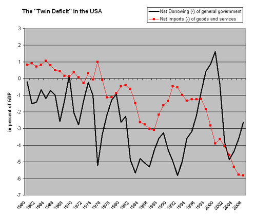{kind=link}
In the U.S., net borrowing has tended to have a direct relationship with net imports. The red line represents net imports, which is equivalent to the negative balance of trade, and the black line represents net borrowing, which is equivalent to the government budget deficit. Although the two are not identical, a rise in one tends to accompany a rise in the other, and vice versa.
The twin deficits hypothesis implies that as the budget deficit grows, net capital outflow from a country falls. This is because the nation is financing its spending by selling assets to foreigners. The total rate of national savings falls, which may lead to an increase in the interest rate as lending to the country (i.e. buying bonds and other financial assets) becomes more risky.
31.4. Barriers to Trade
31.4.1. Tariffs
Tariffs are taxes levied on goods entering or exiting a country, and have consequences for both domestic consumers and producers.
Learning Objective
Discuss the consequences of a tariff for a domestic economy
Key Points
- Tariffs can be levied on goods being imported in a country (import tariff), or exported from a country (export tariff). They may be levied in order to protect domestic producers (protective tariff), or to raise revenue for the government (revenue tariff).
- Specific tariffs levy a fixed duty on a good. Ad valorem tariffs are based on a percentage of the good's value. Compound tariffs are a combination of specific and ad valorem tariffs.
- Tariffs often increase domestic producer surplus and the quantity of a good supplied domestically, but hurt domestic consumer surplus.
Key Term
- tariff
- A system of government-imposed duties levied on imported or exported goods; a list of such duties, or the duties themselves.
One barrier to international trade is a tariff. A tariff is a tax that is imposed by a government on imported or exported goods. They are also known as customs duties.
Types of Tariffs
Tariffs can be classified based on what is being taxed:
- Import tariffs: Taxes on goods that are imported into a country. They are more common than export tariffs.
- Export tariffs:Taxes on goods that are leaving a country. This may be done to raise tariff revenue or to restrict world supply of a good.
Tariffs may also be classified by their purpose:
- Protective tariffs: Tariffs levied in order to reduce foreign imports of a product and to protect domestic industries.
- Revenue tariffs: Tariffs levied in order to raise revenue for the government.
Tariffs can also be classified on how the duty amount is valued:
- Specific tariffs: Tariffs that levy a flat rate on each item that is imported. For example, a specific tariff would be a fixed \$1,000 duty on every car that is imported into a country, regardless of how much the car costs.
- Ad valorem tariffs: Tariffs based on a percentage of the value of each item. For example, an ad valorem tariff would be a 20% tax on the value of every car imported into a country.
- Compound tariffs: Tariffs that are a combination of specific tariffs and ad valorem tariffs. For example, a compound tariff might consist of a fixed \$100 duty plus 10% of the value of every imported car.
Consequences of Levying a Tariff
To see the effects of levying an import tariff, consider the example shown in . Assume that there is an import tax levied on a good in a domestic country, Home. The domestic supply of the good is represented by the diagonal supply curve, and world supply is perfectly elastic and represented by the horizontal line at P_w. Before a tariff is levied, the domestic price is at P_w, and the quantity demanded is at D (with quantity S provided domestically, and quantity D-S imported).
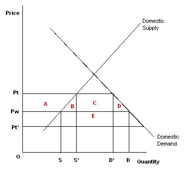{kind=link}
When a tariff is levied on imported goods, the domestic price of the good rises. This benefits domestic producers by increasing producer surplus, but domestic consumers see a small consumer surplus.
When the tariff is imposed, the domestic price of the good rises to P_t. Now, more of the good is provided domestically; instead of producing S, it now produces S*. Imports of the good fall, from the quantity D-S to the new quantity D*-S*. With the higher prices, domestic producers experience a gain in producer surplus (shown as area A). In contrast, because of the higher prices, domestic consumers experience a loss in consumer surplus; consumer surplus shrinks from the area above P_w to the area above P_t(it shrinks by the areas A, B, C, and D).
Because the tariff is a tax, the government gains some revenue. The government charges a tariff amount of P_t-P_w on every imported good. The amount of revenue is equal to the tariff amount times the number of imported goods, or (P_t-P_w)(D*-S*). This results in a governmental gain of area C.
In this example, domestic producers and the government both gain from the import tariff, and domestic consumers lose. However, if the world price is higher than the domestic price, a tariff will not change the price or quantity consumed of a good.
31.4.2. Quotas
Quotas are limitations on imported goods, come in an absolute or tariff-rate varieties, and affect supply in the domestic economy.
Learning Objective
Discuss the economic consequences of different kinds of quotas
Key Points
- There are two types of quotas: absolute and tariff-rate. Absolute quotas are quotas that limit the amount of a specific good that may enter a country. Tariff-rate quotas allow a quantity of a good to be imported under a lower duty rate; any amount above this is subject to a higher duty.
- Justifications for the use of quotas include protection for domestic employment and infant industries, protection against unfair foreign trade practices, and protection of national security.
- Quotas often hurt domestic consumers and benefit domestic producers. Quotas may also provide incentives for administrative corruption and smuggling.
Key Terms
- quota
- A restriction on the import of something to a specific quantity.
- absolute quota
- A limitation of the quantity of certain goods that may enter commerce during a specific period.
- tariff-rate quota
- Allows a specified quantity of imported goods to be entered at a reduced rate of duty during the quota period, with quantities entered in excess of the quota limit subject to a higher duty rate.
Barriers to trade exist in many forms. A tariff is a barrier to trade that taxes imports or exports, thus increasing the cost of a good. Another barrier to trade is an import quota, which places a limit on the amount of a good that may enter a country.
Types of Quotas
There are two main types of import quota: the absolute quota and the tariff-rate quota.
An absolute quota is a limit on the quantity of specific goods that may enter a country during a certain time period. Once the quota has been fulfilled, no other goods may be imported into the country. An absolute quota may be set globally, in which case goods may be imported from any country until the goal has been reached. An absolute quota may also be set selectively for certain countries. As an example, suppose an absolute, global quota for pens is set at 50 million. The government is setting a limit that, in total, only 50 million pens can be imported. If there were a selective, absolute quota, only 50 million pens would be able to be imported, but this total would be divided among exporting countries. Country A might only be able to export 10 million pens, Country B might be able to export 25 million pens, and Country C might be able to export 15 million pens. Collectively, the total imports equal 50 million pens, but the proportions of pens from each country are set.
A tariff-rate quota is a two-tier quota system that combines characteristics of tariffs and quotas. Under a tariff-rate quota system, an initial quota of a good is allowed to enter the country at a lower duty rate. Once the initial quota is surpassed, imports are not stopped; instead, more of the good may be imported, but at a higher tariff rate . For example, under a tariff-rate quota system, a country may allow 50 million pens to be imported at the low tariff rate of \$1 each. Any pen that is imported after this first-tier quota has been reached would be charged a higher tariff, say \$3 each.
In the US, the import of sugar is regulated by tariff-rate barriers. In 2012, the US allowed over 150,000 tons of raw cane sugar to be imported from Brazil at a reduced tariff rate.
Reasons to Implement Quotas
Quotas are often implemented for similar reasons as other trade barriers. Often, quotas are instituted to:
- Protect domestic industries and employment: By reducing the number of foreign imports, domestic suppliers must produce more to meet domestic demand. By producing more, the suppliers must hire more domestic workers, increasing employment. Additionally, setting quotas to reduce foreign competition allows domestic "infant industries," or young, small industries, to grow and mature to a competitive level.
- Protect against unfair trade practices: Setting a quota helps protect a domestic economy from unfair trade practices such as dumping, the pricing of imports below production cost. By restricting imports, quotas minimize the impact of such activities.
- Protect national security: Import quotas discourage imports and encourage domestic production of goods that may be necessary to the security of the country. By protecting and encouraging the growth of these defense-related industries, a country will not have to be dependent on foreign imports in the event of a war.
Consequences of Quotas
Like other trade barriers, quotas restrict international trade, and thus, have consequences for the domestic market. In particular, quotas restrict competition for domestic commodities, which raises prices and reduces selection. This hurts the domestic consumer, who experiences a loss in consumer surplus. On the other hand, this very action benefits the domestic producer, who sees an increase in producer surplus. Often, the increase in producer surplus is not enough to offset the loss in consumer surplus, so the economy experiences a loss in total surplus.
Quotas may also foster negative economic activities. Import quotas may promote administrative corruption, especially in countries where import quotas are given to selected importers. There are incentives to give the quotas to importers who can provide the most favors or the largest bribes to officials. Quotas may also encourage smuggling. As quotas raise the price of domestic goods, it becomes profitable to try and circumvent the quota by bringing in goods illegally, or in excess of the quota.
31.4.3. Other Barriers
Barriers to trade include specific limitations to trade, customs procedures, governmental participation, and technical barriers to trade.
Learning Objective
Distinguish different barriers to trade
Key Points
- Specific limitations to trade barriers include local content requirements and embargoes. This category of barriers comes from trade regulations.
- Customs and administrative procedure barriers include bureaucratic red tape and anti-dumping practices. This category of barriers comes from government procedures.
- Governmental participation barriers include government procurement programs, export subsidies, and countervailing duties. This category of barriers involves the direct participation of government in trade.
- Technical barriers to trade include sanitary regulations, measurement and labeling standards, and ingredient standards. This category of barriers involves health, safety, and measurement standards.
Key Terms
- countervailing duty
- A tax levied on an imported article to offset the unfair price advantage it holds due to a subsidy paid to producers or exporters by the government of the exporting country if such imports cause or threaten injury to a domestic industry.
- embargo
- A ban on trade with another country.
- Dumping
- Selling goods at less than their normal price, especially in the export market.
In addition to tariffs and quotas, other barriers to trade exist. They can be divided into four separate categories: specific limitations to trade, customs and administrative procedures, government participation, and technical barriers to trade.
Specific Limitations to Trade
This category of trade barriers stems from regulations on international trade. Some examples include:
- Local content requirements, or domestic content requirements, are rules that mandate how much of a product must be produced domestically in order to qualify for lowered tariffs or other preferential treatment.
- Embargoes are prohibitions on trade ban imports or exports, and may apply to certain categories of products, or strictly to goods supplied by certain countries .
Customs and Administrative Procedures
This category of trade barriers refers to trade impediments that stem from governmental procedures and controls. Some examples include:
- Bureaucratic delays: Delays at ports or other country entrances caused by administrative or bureaucratic red-tape increase uncertainty and the cost of maintaining inventory.
- Anti-dumping duties: In international trade, dumping refers to a form of predatory pricing in which exported products are priced below the cost of production or below the price charged in the home market. Anti-dumping duties are usually extra taxes levied on the product to neutralize the predatory pricing and bring the price closer to the "normal value. "
Government Participation
This category of trade barriers represents direct governmental involvement in international trade. Some examples include:
- Government procurement programs: Public authorities, such as government agencies, are much like private interests in that they must also buy goods and services. Unlike private interests, governments are more likely to buy domestically produced goods and services, rather than the lowest-cost commodities. Because government procurement often represent a significant portion of a country's GDP, foreign suppliers are at a disadvantage to domestic ones when it comes to these programs.
- Export subsidies: Export subsidies are production subsidies granted to exported products, usually by a government. With export subsidies, domestic producers can sell their commodities in foreign markets below cost, which makes them more competitive.
- Countervailing duties: Countervailing duties, or anti-subsidy duties, are extra duties levied on imports in order to neutralize an export subsidy. If a country discovers that a foreign country subsidizes its exports, and domestic producers are injured as a result, a countervailing duty can be imposed in order to reduce the export subsidy advantage. In that respect, countervailing duties are similar to anti-dumping duties in that they both bring a imported product's value closer to the "normal value. "
Technical Barriers to Trade
Technical barriers to trade are non-tariff barriers to trade that refer to standards implemented by countries. Because these standards must be met before goods are allowed to enter or leave a country, they represent international trade barriers. Some examples include:
- Sanitary and phytosanitary measures: These are health standards for plants, animals, and other products, and are designed to protect humans, animals, and plants from pests or diseases.
- Rules for product weights, sizes, or packaging.
- Standards for labeling and testing products.
- Ingredient or identity standards.
31.5. Arguments for and Against Protectionist Policy
31.5.1. National Security Argument
National security protectionist arguments pertain to the risk of dependency upon other nations for economic sustainability.
Learning Objective
Evaluate the arguments in favor of the use of trade protectionism in the security industry
Key Points
- Economic interdependence and globalization has resulted in a unique capitalistic system, where each country is largely dependent upon other countries for economic sustainability.
- It has been noted, somewhat intuitively and empirically, that conflict reduces trade. This highlights the risk of conflict harming an economy.
- A more specific context for trade and conflict can be the way in which trade is complicated during wartime. Indeed, trade during wartime can be a substantial threat to a nation, as economic levers such as sanctions can be utilized.
- Iran and North Korea are strong modern examples as well as the recent history of the U.S.-Iraq war. All of these economies struggle(d) against harsh economic sanctions.
- Combining these ideas, it is clear that there is substantial national security value to trade protectionism.
Key Terms
- Self-sufficiency
- Able to provide for oneself independently of others.
- sanction
- A penalty, or some coercive measure, intended to ensure compliance; especially one adopted by several nations, or by an international body.
Economic interdependence and globalization has resulted in a system, where each country is largely dependent upon other countries for economic sustainability (though to varying degrees). This results in a substantial national security threat in the form of conflicting or offensive trade strategies between countries. Indeed, economics is often used directly as a weapon of war and conflict via trade sanctions. This highlights a critical protectionist argument pertaining to the very real risk of dependency upon other nations for economic sustainability.
Trade and Conflict
An interesting discussion in economics is the relationship between trade and conflict. It has been noted, somewhat intuitively and empirically, that conflict reduces trade. However, is it also the case that trade reduces conflict? This question is largely unanswered, although the stances are becoming more highly developed. It is hypothesized that trade does not necessarily reduce conflict, but instead changes the nature of the conflict. Economic levers are much more practical than military levers, and are often used for similar reasons. For this reason, it is difficult to separate trade and conflict completely because there is some critical overlap between the two. This is a fundamental foundation for the trade protectionism logic from a national security perspective.
Trade During Conflict
A more specific context for trade and conflict can be the way in which trade is complicated during wartime. Indeed, trade during wartime can be a substantial threat to a nation depending on the scale and scope of the conflict (most notably who is involved). For example, consider World War II. In this scenario Germany was largely isolated in the conflict, and therefore had extremely limited trade partners. Direct conflict will almost always result in a complete cease in trading not only between the country in which the war is occurring, but also any of that country's allies (who may or may not be directly involved). However, some argue self-sufficiency (via protectionism) in war is not necessary, as friendly nations will still provide trade and economic support.
Sanctions also play a dramatic role as an offensive militaristic maneuver. Iran and North Korea are strong modern examples as well as the recent history of the U.S.-Iraq war. In all of these circumstances, either the U.S. alone or along with a number of allies (representing substantial consumption percentages) actively limited the ability for these countries to trade and generate economic value for their nations (and subsequently their people). While this looks purely economic, it has important social and humanitarian implications as well. The chart makes this case quite clearly, pointing out the death toll in wartime if economic levers are utilized.
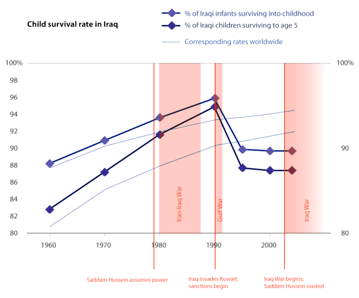{kind=link}
This graphic underlines the indirect consequences of employing economic levers (i.e. sanctions) in a militaristic fashion during a conflict. While the justification for these figures is complex, including other war-related factors, the correlation is quite clear. Diminishing a country's economic prospects will in turn result in loss of life, particularly in developing nations.
Protectionism
Combining these ideas, it is clear that there is substantial national security value to trade protectionism. However, the opportunity cost of leveraging the ever-growing global markets make this an unattractive prospect if taken to any extreme, as the benefits of global trade rapidly offset the risk of economic dependency upon hostile nations.
31.5.2. Infant Industry Argument
Economic markets are inherently competitive and newer economies are vulnerable to their more developed counterparts in other countries.
Learning Objective
Discuss the use of trade protectionism to promote new industries
Key Points
- Trade protectionism is national policies restricting international economic trade to alter the balance between imports and goods manufactured domestically through import quotas, tariffs, taxes, anti-dumping legislation, and other limitations.
- The primary advantage to countries with higher economic power and bigger corporations is simply economies of scale, which infant industries in developing countries often protect against.
- The United States was employing heavy tariffs to protect their fragile economic system as the economy began to achieve autonomy after British rule, which proved effective.
- From a broader and more far-reaching perspective, protectionism as a general principle has been heavily criticized (even in infant industry situations). The argument is that free markets add value on a global level, while protectionism confines economic value to the nation employing it.
Key Terms
- Dumping
- Selling goods at less than their normal price, especially in the export market as a means of securing a monopoly.
- Nascent
- Emerging; just coming into existence.
Trade protectionism is defined as national policy restricting international economic trade to alter the balance between imports and goods manufactured domestically, usually executed via policies and governmental regulations such as import quotas, tariffs, taxes, anti-dumping legislation, and other limitations.
Arguments for Protecting Infant Industry
The primary purpose for this system is as the name implies: protection. Economic markets are inherently competitive, and newer economies are highly vulnerable to their more developed counterparts in other countries for a variety of reasons. The infant industry argument is that new industries need protection until they have become efficient enough to compete in the world market.
Despite the standard argument from mainstream economists postulating that free trade and open markets is the ideal system to allow for capitalistic development, there are many economists who believe that some degree of protectionism is the only way to minimize income gaps and substantial inequity from economy to economy (see ). The primary advantage to countries with higher economic power and bigger corporations is simply economies of scale and economies of scope, in addition to being further along the experience curve.
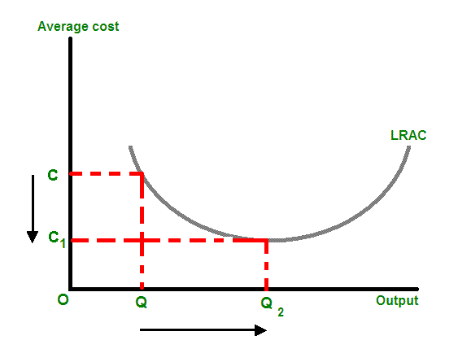{kind=link}
The basic premise behind economies of scale is that higher production quantity reduces cost per unit, ultimately allowing for the derivation of economic advantage in the market. Infant industries generally do not have the capacity to do this.
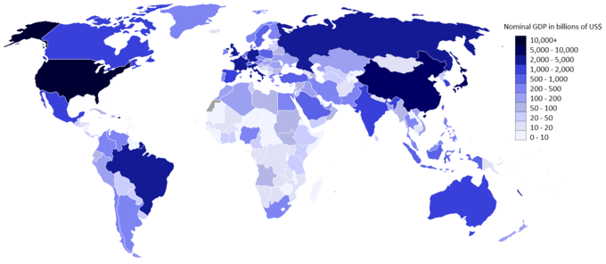{kind=link}
This map demonstrates the vast difference in overall economic power across the globe, underlining the inequities that need to be addressed in economic policy formulation.
History has proven the value of protection for the countries employing tariff-based international trade policies. Alexander Hamilton first pointed out the inequities of developing economies with young industry in 1790, which was later picked up and developed by Daniel Raymond and Friedrich List in the 19th century. Around this time frame, the United States was employing heavy tariffs to protect their fragile economic system as the economy began to achieve autonomy after British rule. Indeed, Britain employed similarly protectionist policies during this time frame, setting the tone for large economic expansion in the longer term.
Criticism
Of course, protective policy while industry develops domestically is not a cure all. In Brazil in the 1980's there were heavy protective policies in place to defend Brazil's nascent computer industry from highly evolved competitors internationally. While this seemed practical, what ended up happening was quite damaging for Brazil. Technology advanced rapidly, and without strategic alliances on a global scale, Brazil largely missed out on these advances. This protectionism seems to have damaged industry prospects on a global level for Brazil in this scenario.
From a broader and more far-reaching perspective, protectionism as a general principle has been heavily criticized (even in infant industry situations). The reason for this is quite simply the significant jump in prosperity as international trade expanded, and the huge capacity for specialization, economies of scale, technology sharing, and a host of other advantages that have been a direct result of free global markets. The problem still remains, however, that this prosperity is often unregulated and of the greatest benefit to the influential players in established economies, sometimes at the expense of exploitation of developing nations (cheaper labor, reduced governmental oversight, etc.). As a result of this, protecting infant industries can benefit the nation employing them, but generally with the opportunity cost of global value.
31.5.3. Unfair Competition Argument
One of the strongest arguments for trade protectionism is unfair competition emerging due to differences in policy and enforcement ability.
Learning Objective
Examine the use of protectionism as a way of addressing unfair competitive practices
Key Points
- Protectionist policies are a highly charged topic in economic debates, as economies work to attain the optimal balance of free trade and trade protectionism to capture the most value.
- A recent topic is anti-dumping policies directed at international players looking to undercut domestic business through selling at dramatically reduced prices.
- Another critical risk in the global market is intellectual property (IP) protection as patents are often ignored globally, particularly by countries which lack the infrastructure to enforce IP laws.
- Another unfair competition threat is the emergence of global monopolies. Some of the larger ones attain enough global power and geographic diversification to be difficult to break up via domestic anti-trust laws.
Key Terms
- Subsidies
- Financial support or assistance, such as a grant.
- Reverse engineering
- The process of analyzing the construction and operation of a product in order to manufacture a similar one.
- Dumping
- Selling goods at less than their normal price, especially in the export market as a means of securing a monopoly.
Protectionist policies are a highly charged topic in economic debates, as economies work to attain the optimal balance of free trade and trade protectionism to capture the most value. In many ways, the global markets are torn between pursuing what is best on the global level and what is best at the domestic level, and there is sometimes dissonance between the two. One of the strongest arguments for some degree of trade protectionism is the tendency for unfair competition to emerge, particularly in developing markets without the infrastructure to monitor their businesses and enforce penalties. This is called the unfair competition argument.
Dumping
A popular recent topic is anti-dumping policies directed at international players looking to undercut domestic business through selling at dramatically reduced prices. This can be a substantial threat, particularly from economies where labor laws are lax and workers are exploited to create extremely low cost goods. This is also a risk when governments get too involved in business, a criticism often pointed out in China. Governments can provide subsidies to reduce costs for domestic companies. This can also be a threat in infant industries, where larger and more established players can push out smaller players via undercutting prices, absorbing losses until the competition goes bankrupt.
Offsetting this threat has been an ongoing struggle, with the emergence of international trade agreements and organizations like the World Trade Organization (WTO) playing an increasingly large role. One of the struggles with international trade is the difficulty of enforcement between nations, and the WTO plays a critical role in identifying malpractice and addressing it.
Intellectual Property
Another critical risk in the global market is intellectual property (IP) protection. Patents, in a domestic system, protect the innovator to allow them to generate returns on the substantial time investment required to invent or innovate new products or technologies. On a global scale, however, it is quite common for developing nations to copy new technologies via reverse engineering. This results in copycats violating the patents in an environment where the infrastructure domestically will probably not take legal action. This reduces the desire for innovation and places large economic risks on countries dependent upon this for growth.
This is addressed through international patent laws and trade agreements as well, alongside political pressures such as raising tariffs and placing import quotas on countries suspected to be in violation of patents. The downside to this is that utilizing these measures creates political unrest, global factions, and strained business relationships.
Mergers, Acquisitions, and Market Dominance
Another unfair competition threat is the emergence of global monopolies. Some of the larger ones attain enough global power and geographic diversification to be difficult to break up via domestic antitrust laws. demonstrates the substantial threat of deadweight losses being incurred in economies where consolidation results in a lack of competitive forces to drive down price.
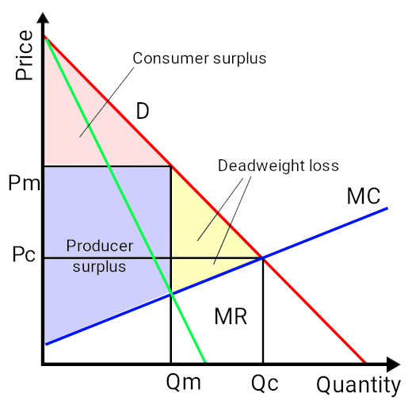{kind=link}
This chart highlights the very real risk of lost economic value in a monopolistic situation (deadweight loss in yellow).
On the domestic level monopolies are widely seen as being addressed (though this is hotly debated by many economists in light of the 'too big to fail' and 'too big to jail' banks). On a global scale it is even more difficult to regulate, as the size and scale of these companies often extends beyond the power of the governments where these companies are located. This is addressed through international standards and trade agreements, standardizing governmental policy on a global level to reduce the risk of monopoly and unfair consolidation towards market dominance.
31.5.4. Jobs Argument
Many policy makers who are proponents of trade protectionism argue that limiting imports will create or save more jobs at home.
Learning Objective
Analyze the use of trade restrictions for strategic purposes
Key Points
- This argument is predicated on the simply fact that buying more domestically will drive up national production, and that this increased production will in turn result in a healthier domestic job market.
- Local governments leverage subsidies, tariffs, import quotas, and anti-dumping policies to maximize strategic capacity domestically, thus creating jobs.
- A sentiment towards protectionism has developed in the U.S. due to the jobs argument in view of an imbalanced trade ratio, where more exports (production and jobs at home) is required to sustain the ongoing consumption of imports.
- Along similar lines, it is common practice for companies to identify strategic alliances abroad and send much of the production work to these locations (outsourcing), motivating governments to bring these jobs back home.
- Local governments leverage subsidies, tariffs, import quotas, and anti-dumping policies to maximize strategic capacity domestically, thus creating jobs.
Key Terms
- Import Quota
- A restriction on the import of something to a specific quantity.
- Trade Balance
- The difference between the monetary value of exports and imports in an economy over a certain period of time.
Many policy makers who are proponents of trade protectionism make the argument that limiting imports will create more jobs at home. This argument is predicated on the idea that buying more domestically will drive up national production, and that this increased production will in turn result in a healthier domestic job market. Domestic industries will not have to compete with foreign producers, and are therefore protected from losing marketshare to cheaper imports.
Trade Balance
It is useful to consider the concept of a trade balance, or net exports, in the context of the jobs argument. It is interesting to look at to assess the extremity to which some nations are 'consumer nations' and others are 'producer nations'. The U.S. and China are a great example of opposite sides of the spectrum, where the trade balance is heavy on one side of the spectrum.
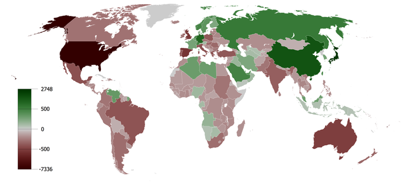{kind=link}
It is interesting to look at this graph and assess the extremity to which some nations are 'consumer nations' and others are 'producer nations. ' The U.S. and China are a great example of opposite sides of the spectrum, where the trade balance is heavily on one side of the spectrum.
In the U.S. this has created a dramatic push for trade protectionism policies; something the United States has not actively pursued in quite some time. The disastrous 2008 economic collapse via the clear-cut abuses by the banks, and the resulting drop in employment rates, has created an incredibly tangible social and political agenda to bring production back to domestic jobs from overseas. This sentiment towards protectionism is a direct result of the jobs argument in view of an imbalanced trade ratio, where more exports (production and jobs at home) are required to sustain the ongoing consumption of imports.
Outsourcing
Along similar lines, it is common practice for companies to identify strategic alliances abroad and send much of the production work to these locations. This is often a result of cheaper labor and easier systems of governance in those regions. The obvious perspective, from a policy making context, is that these are jobs lost to overseas competitors. While this perspective is often criticized for being short-sighted and against the modern economic view of free markets, it has resulted in policy makers providing incentives to 'bring jobs back home. '
This idea of limiting outsourcing in light of the protectionist jobs argument has resulted in governmental subsidies that work to offset the costs of manufacturing domestically (in the U.S. particularly). These subsidies are essentially grants or tax breaks for companies operating domestically and creating jobs, driving up employment rates via protectionist strategies.
Trade Restriction Strategies
Offsetting the threats of outsourcing and trade imbalances and driving domestic purchasing, and thus domestic production, is done through a variety of political vehicles. Most notable among them are:
- Import Quotas: This is the act of limiting the number of a certain good that can be purchasing from a given country, ensuring that domestic producers maintain a portion of the market share.
- Tariffs: Tariffs are fairly straight-forward, essentially taxes to bring goods into a given country. High tariffs will raise the cost for foreign producers to sell their goods in a domestic system, providing strategic advantages for local producers. One of the pitfalls of tariffs is the likelihood of retaliation, where the foreign government returns with similar tariffs. This will in turn damage global prospects for domestic suppliers.
- Anti-dumping:Anti-dumping legislation actively offsets the ability of low cost or highly subsidized producers in foreign countries to undercut prices in a domestic system. Dumping is the process of selling goods far below market value to drive out competition, often in pursuit of creating a monopoly.
- Subsidies: On the other end of the spectrum, and as noted above, governments can provide subsidies to domestic producers to lower their costs and drive up competitive ability. This can in turn create jobs.
31.5.5. A Summary of International Trade Agreements
International trade agreements are agreements across national borders that reduce or eliminate trade barriers to promote economic exchange.
Learning Objective
Identify at least three main international trade agreements
Key Points
- International trade encounters a variety of obstacles which reduce trade incentives. This is usually through tariffs, quotas, taxes, and other trade restrictions.
- The WTO is the largest international trade organization, replacing the General Agreement on Tariffs and Trade (GATT) in 1995, designed to enable international trade while reducing unfair practices.
- NAFTA is a trilateral agreement between the United States, Canada and Mexico designed to minimize any trade or investment barriers between any of these countries (primarily in the form of tariffs).
- The APEC forum is a cooperative discussion between 21 countries in the Pacific Rim region promoting free trade, with a focus on newly industrialized economies (NIE).
Key Terms
- Foreign direct investment
- Investment into production or business in a country by an individual or company of another country.
- tariff
- A system of government-imposed duties levied on imported or exported goods; a list of such duties, or the duties themselves.
International trade agreements are trade agreements across national borders intended to reduce or eliminate trade barriers to promote economic exchange. International trade encounters a variety of obstacles, some of which pertain to the protectionism identified in other atoms, which reduce trade incentives. This is usually through tariffs, quotas, taxes, and other trade restrictions. It is also useful to create standards and norms across different countries, particularly for things like intellectual property law recognition, which enables businesses to operate across borders.
There are quite a few international trade agreements, some of which are more formal than others. The trade agreements below provide a fairly comprehensive overview of the current international trade environment:
World Trade Organization (WTO)
The WTO is the largest international trade organization, replacing the General Agreement on Tariffs and Trade (GATT) in 1995, designed to enable international trade while reducing unfair practices. In many ways, the WTO is more complex than other international trade agreements because it incorporates a variety of smaller agreements into a larger framework. The WTO includes upwards of 60 different agreements alongside 159 official members and 25 observers. underlines how effective and universal international trade agreements are becoming. The WTO performs several objective functions as well if trade disputes arise, acting as a framework for assessing appropriate international trade practices.
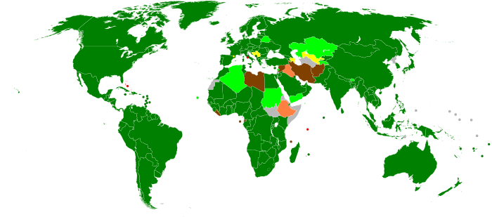{kind=link}
The World Trade Organization (WTO) is an organization designed to oversee and enable international trade. This map shows how successful this has been on a global scale.
The core of the WTO is the most-favored nation (MFN) rule, which states that each WTO member must be charged the lowest tariffs that an importer places on any country. For example, if the US charges Brazil a 5% tariff on imported clothes, and this is the lowest tariff it has placed on any country in the WTO, all other WTO members must also be charged a 5% tariff. Every WTO member gets charged the lowest tariff that an importer charges any other member.
North American Free Trade Agreement (NAFTA)
Unlike the WTO, which is an entirely global approach, most international agreements stem from geographic proximity. NAFTA is a trilateral agreement between the United States, Canada and Mexico designed to minimize any trade or investment barriers between any of these countries (primarily in the form of tariffs). Generally speaking, the United States demonstrates a trade deficit with these countries relative to goods and a surplus relative to services. The United States also demonstrates high and fast-growing foreign direct investment (FDI) in both regions.
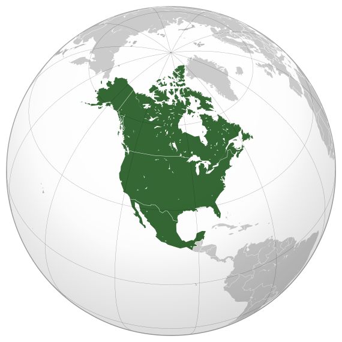{kind=link}
This map outlines each of the countries involved in the North American Free Trade Agreement, an international trade agreement focused on a geographic proximity.
There has been a great deal of controversy surrounding this trade agreement. Agriculture is not included in this agreement, and is often a tough point of discussion for the WTO as well. Mexico is also a point tension due to the fact that it is developing economically (compared to the U.S. and Canada who are considered already developed). Finally, Canadians have often objected to the NAFTA agreements due to the way in which the United States FDI employs hostile takeovers. These agreements demonstrate some of the validity behind trade protectionism and isolationism (as discussed in other atoms in this chapter).
Asia-Pacific Economic Cooperation (APEC)
The APEC forum is particularly interesting in the context of the above agreements, as it is slightly less formal than the above two (it is referred to as a 'forum'). The APEC forum is a cooperative discussion between 21 countries in the Pacific Rim region promoting free trade, with a focus on newly industrialized economies (NIE). Developing nations gaining access to capital investment and export agreements is the central outcome of APEC, driving economic growth through controlled global expansion. This region represents over half of the world's GDP and 40% of the overall world population, making this a critical region of the world economy.
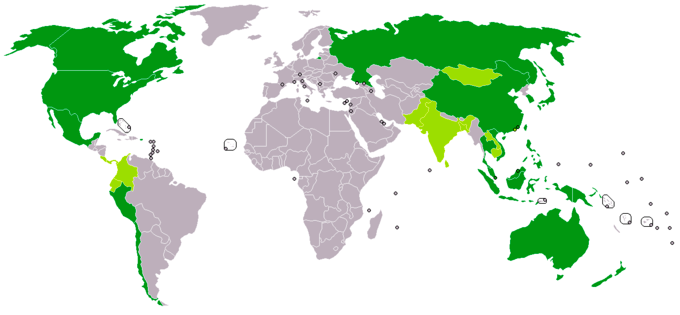{kind=link}
The Asia-Pacific Economic Cooperation (APEC) is a forum of 21 countries in the Pacific Rim region, focusing on free trade and economic cooperation.